2026-03-28
technology
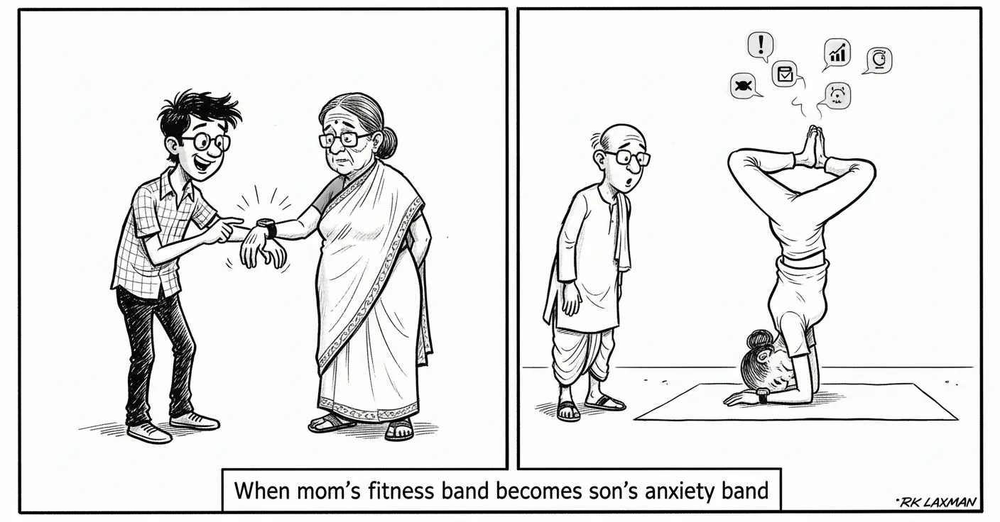
When mom's fitness band becomes son's anxiety band
Whoop has LeBron – now it wants your mom
Whoop fitness wearable company wants to expand from athlete-focused device to mainstream health monitor that could predi...
technologyhealth_techwearables
2026-03-28
politics
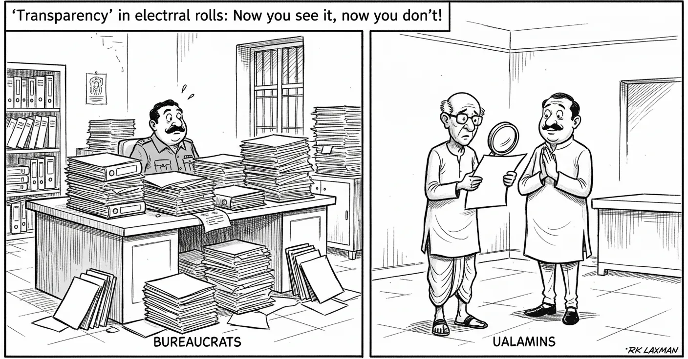
'Transparency' in electoral rolls: Now you see it, now you don't!
Assembly Elections LIVE: ECI publishes second supplementary voter list in Bengal
Election Commission publishes second voter list in Bengal but faces criticism for lack of transparency about deletions a...
politicselectionsbureaucracy
2026-03-28
business
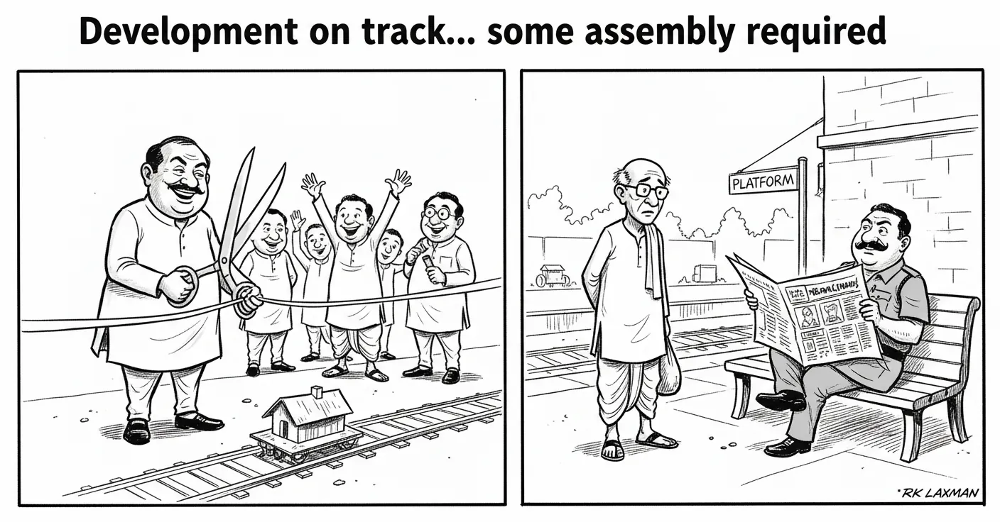
Development on track... some assembly required
PM to inaugurate Rs 891 cr rail projects in Gujarat
PM Modi to inaugurate railway projects worth Rs 891 crore in Gujarat, including new train lines and track doubling to im...
businessinfrastructurerailways
2026-03-28
sports
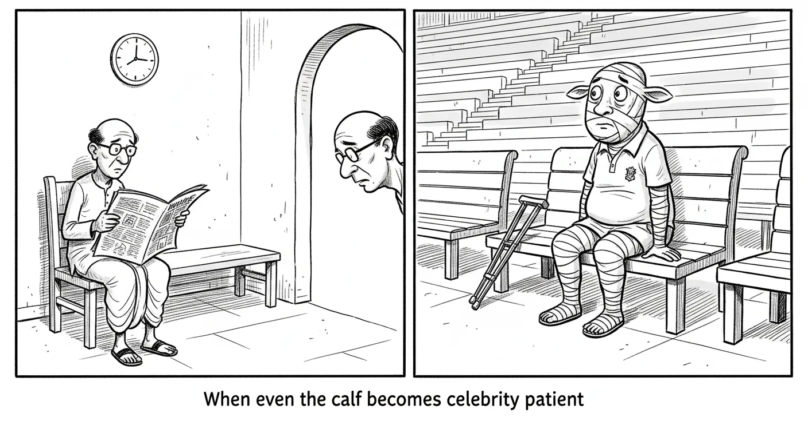
When even the calf becomes celebrity patient
Dhoni 'likely to miss first two weeks' of IPL 2026 because of calf strain
Cricket star MS Dhoni will miss first two weeks of IPL 2026 due to calf injury, affecting Chennai Super Kings' campaign ...
sportscricketIPL
2026-03-21
technology
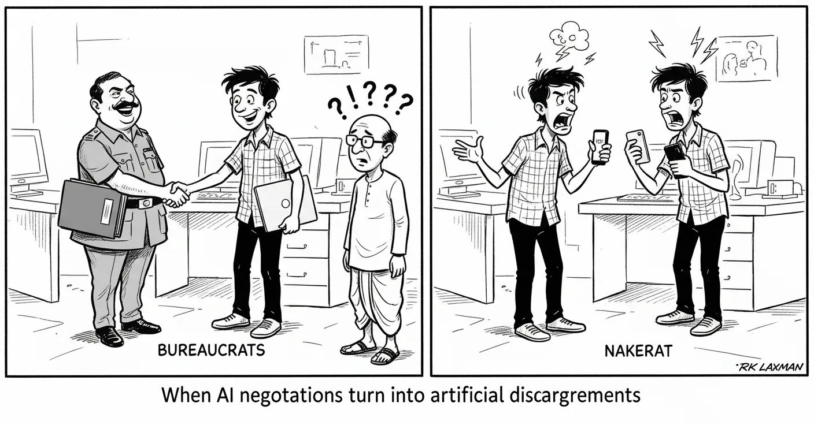
When AI negotiations turn into artificial disagreements
New court filing reveals Pentagon told Anthropic the two sides were nearly align...
AI company Anthropic and Pentagon disagree over military AI use terms, with conflicting claims about what was actually d...
technologyartificial_intelligencegovernment
2026-03-21
politics
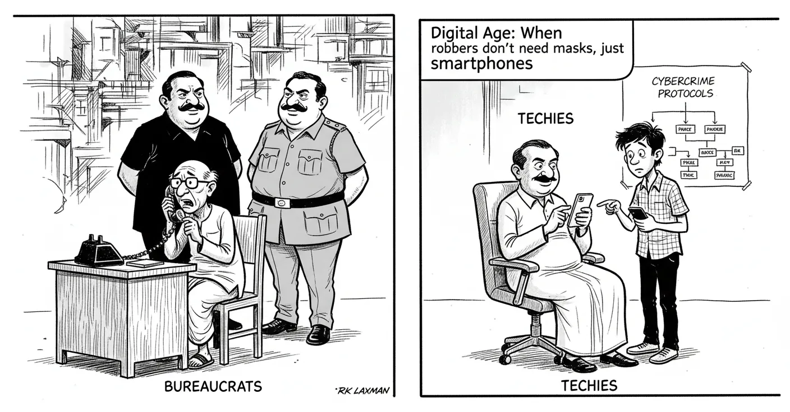
Digital Age: When robbers don't need masks, just smartphones
Businessman loses ₹15.4 crore in digital arrest scam
81-year-old businessman loses ₹15.4 crore to scammers posing as CBI and RBI officials through intimidation tactics and f...
politicscybercrimeelderly
2026-03-21
business
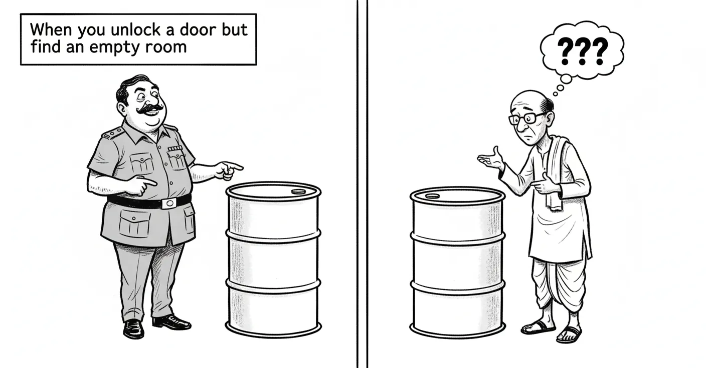
When you unlock a door but find an empty room
Iran denies US claim on crude sanctions relief
US eases sanctions on Iranian oil currently at sea, but Iran claims it has no surplus oil available, contradicting US Tr...
businessoilsanctions
2026-03-21
sports
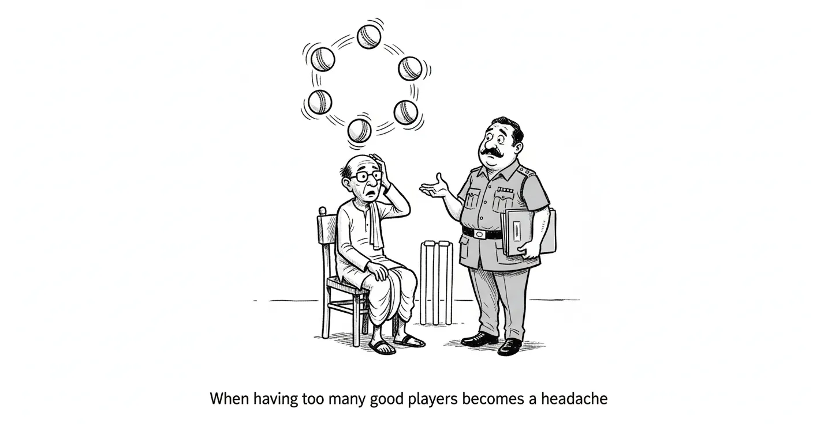
When having too many good players becomes a headache
King's T20I return highlights Australia's selection crunch
Australian cricket team faces selection dilemma as spinner Alana King performs well but may still be left out of World C...
sportscricketselection-dilemma
2026-03-14
technology
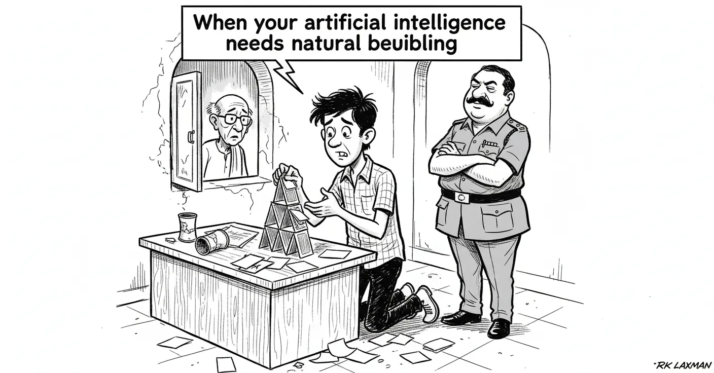
When your artificial intelligence needs natural rebuilding
‘Not built right the first time’ — Musk’s xAI is starting over again, again
Elon Musk's AI company xAI is starting over after most co-founders left, struggling to compete in AI coding tools market...
technologyartificial_intelligencestartup_culture
2026-03-14
politics
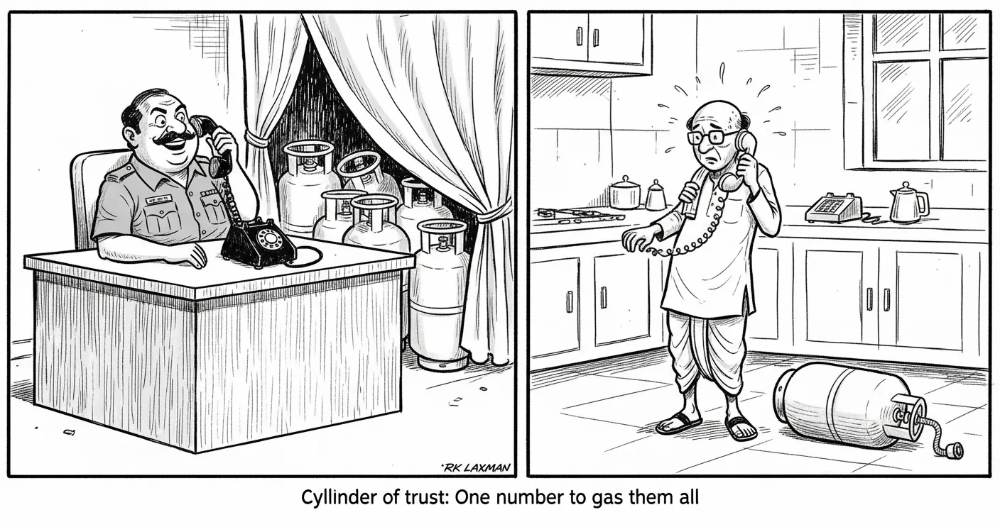
Cylinder of trust: One number to gas them all
Telangana Civil Supplies Minister to meet with LPG Distributors Association on M...
Telangana government cracks down on LPG hoarding and black marketing, sets up toll-free number for public complaints.
politicsbureaucracypublic services
2026-03-14
business
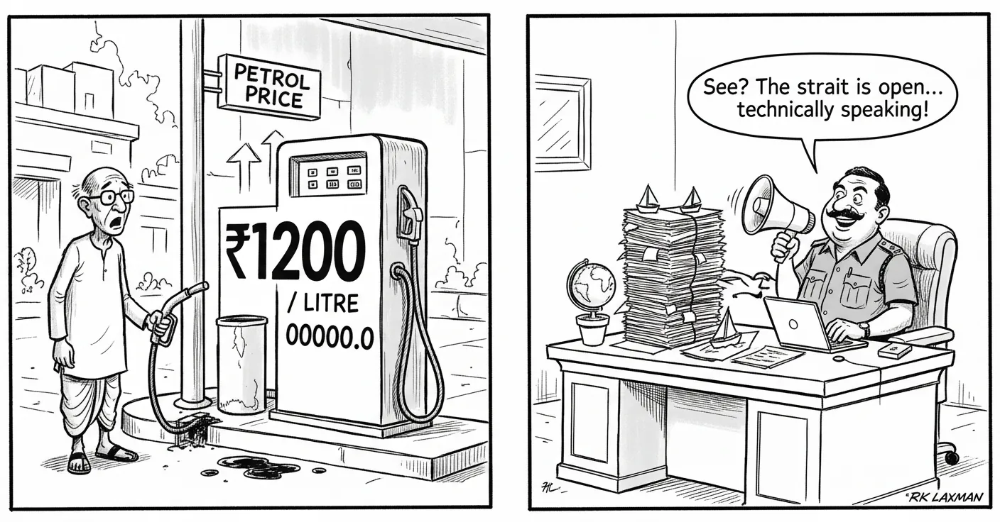
See? The strait is open... technically speaking!
Iran: Strait of Hormuz open, some ships passing
Iran keeps Strait of Hormuz technically open during conflict with US/Israel, but ship movement is limited. Rising oil pr...
businessoildiplomacy
2026-03-14
sports
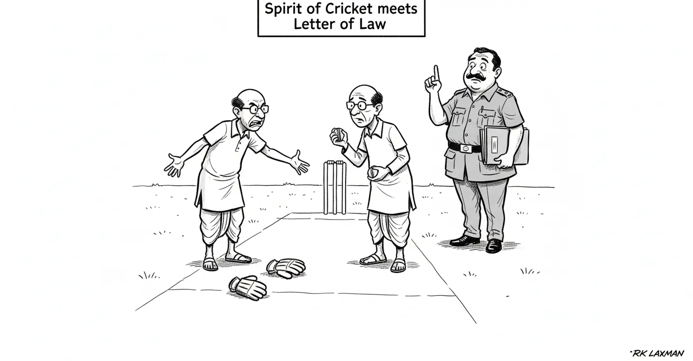
Spirit of Cricket meets Letter of Law
Agha calls for 'sportsman spirit' after controversial dismissal
During a cricket match, a controversial run-out leads to heated exchange between players. One player later calls for 'sp...
sportscricketsportsmanship
2026-03-07
technology
Some robins shouldn't steal from the rich after all
Robinhood’s startup fund stumbles in NYSE debut
Robinhood's new startup investment fund for retail investors launches below target and sees stock price drop on first tr...
technologyfinanceinvesting
2026-03-07
politics
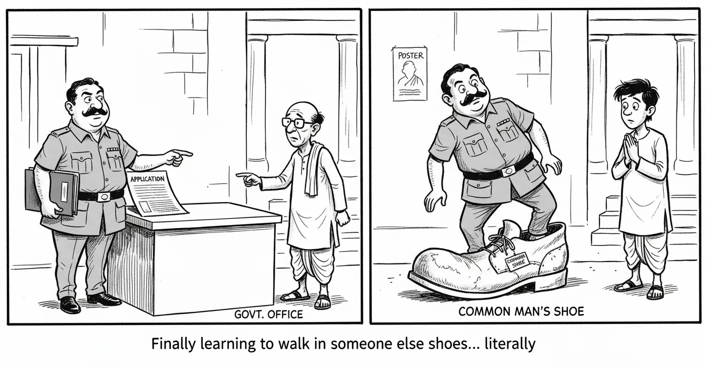
Finally learning to walk in someone else's shoes... literally
Sensitise government officials on rights of persons with disabilities, orders Ma...
Madras High Court orders sensitivity training for officials after they denied a qualified engineer with disabilities a j...
politicsdisability_rightsbureaucracy
2026-03-07
business
Just another day at the office... 35,000 feet up
War zones add new risks for airline pilots
Commercial airline pilots face increased risks from conflicts, missiles and drones in airspace, especially in Middle Eas...
businessaviationsafety
2026-03-07
sports
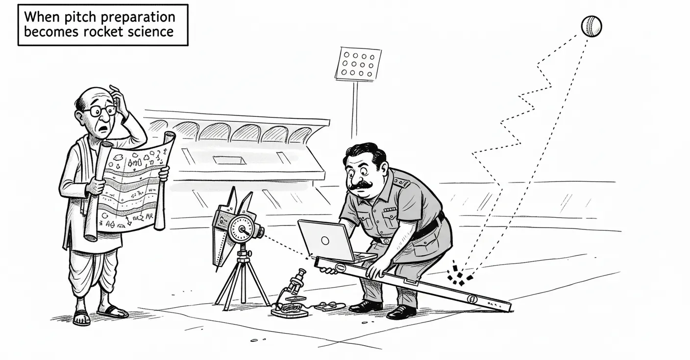
When pitch preparation becomes rocket science
Mixed-soil pitch set to offer minimal turn and good bounce for India-NZ final
The T20 World Cup final between India and New Zealand will be played on a mixed-soil pitch expected to offer minimal tur...
sportscricketbureaucracy
2026-02-28
technology
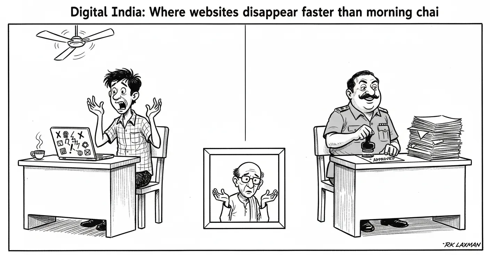
Digital India: Where websites disappear faster than morning chai
India disrupts access to popular developer platform Supabase with blocking order
India blocks access to Supabase, a popular developer platform, causing disruption for tech companies. Government order l...
technologycensorshipbureaucracy
2026-02-28
politics
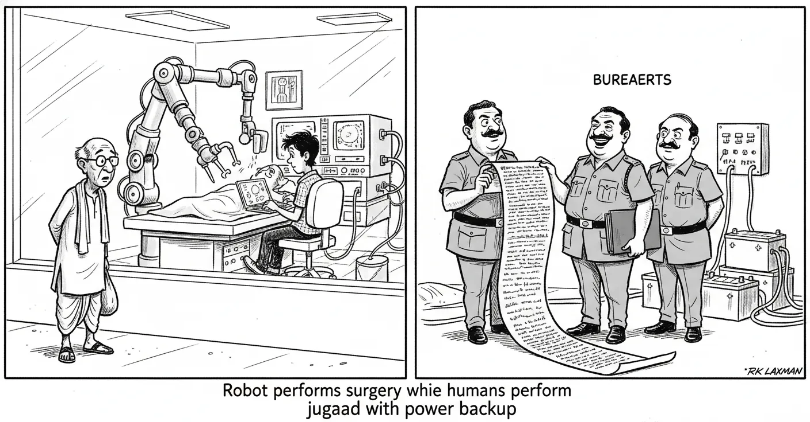
Robot performs surgery while humans perform jugaad with power backup
Hospital performs rare robotic surgery on eight-year-old boy in Vellore
A hospital in Vellore successfully performed rare robotic surgery on an 8-year-old boy with remote guidance from New Yor...
politicshealthcaretechnology
2026-02-28
business
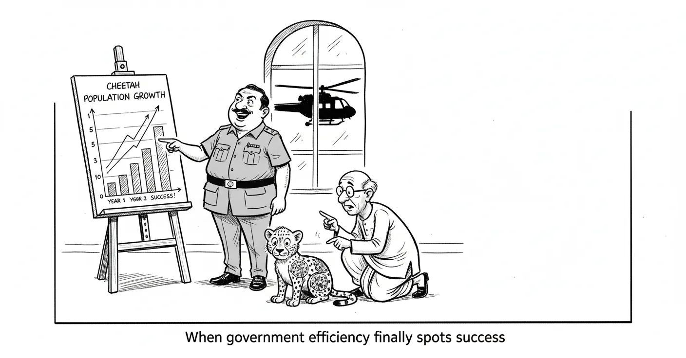
When government efficiency finally spots success
India’s cheetah revival gets new boost
India receives 9 more cheetahs from Botswana, bringing total to 48 as part of ambitious wildlife revival program. Progra...
businesswildlifebureaucracy
2026-02-28
sports
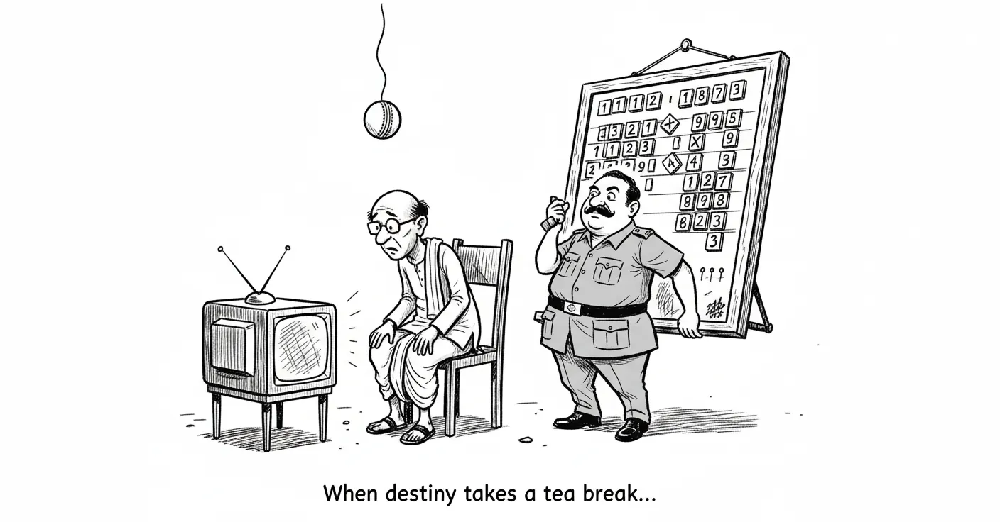
When destiny takes a tea break...
'It's out of our control' - Santner laments loss as New Zealand are left waiting
New Zealand cricket team loses control of their World Cup fate after defeat to England, must now nervously wait for Paki...
sportscricketworld cup
2026-02-21
technology
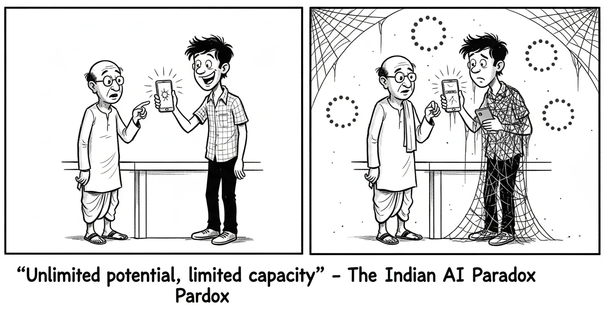
'Unlimited potential, limited capacity' - The Indian AI Paradox
India’s Sarvam launches Indus AI chat app as competition heats up
Indian startup Sarvam launches Indus AI chat app to compete with global players like ChatGPT. The app offers local langu...
technologyartificial_intelligencestartup
2026-02-21
politics
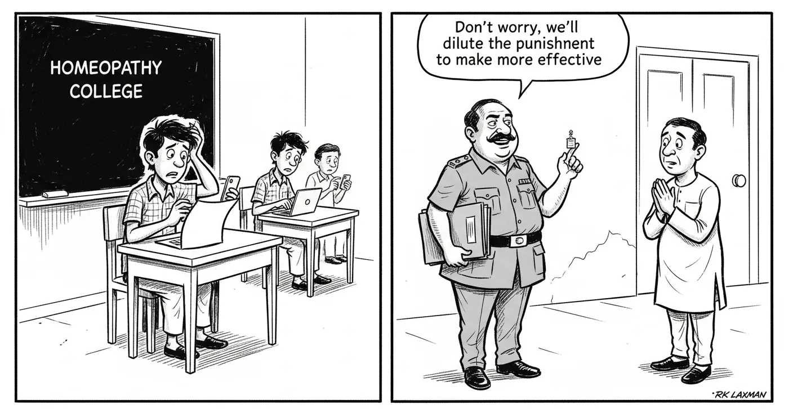
Don't worry, we'll dilute the punishment to make it more effective
Faculty member assaulted by student during exam at homoeopathic medical college ...
Student caught using phone during exam at homeopathy college assaults professor. College administration refers matter to...
politicseducationhealthcare
2026-02-21
business
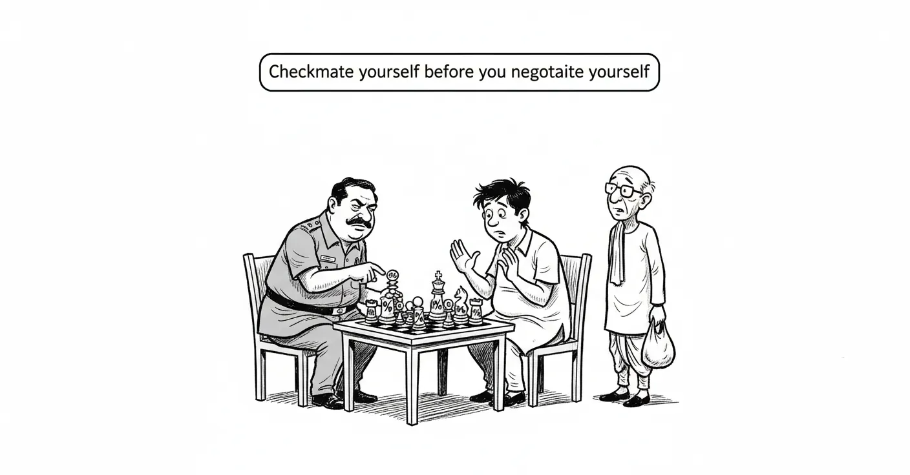
Checkmate yourself before you negotiate yourself
RaGa attacks PM Modi over Trump tariff verdict
After US Supreme Court rules against Trump's tariffs, Indian opposition criticizes PM Modi for rushing into US trade dea...
businesstradepolitics
2026-02-21
sports
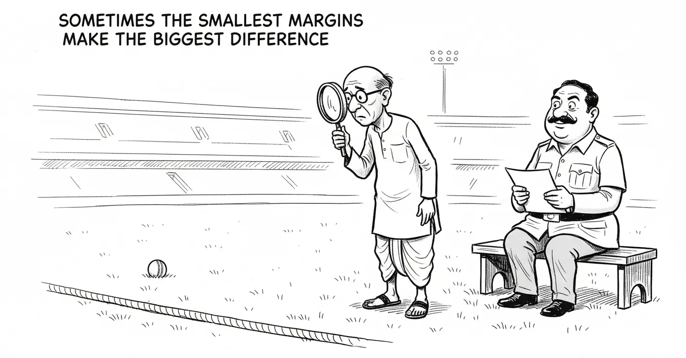
Sometimes the smallest margins make the biggest difference
Ranaweera's four-for leads Sri Lanka to tense win over West Indies
Sri Lankan women's cricket team wins close match against West Indies, with spinner Ranaweera taking 4 wickets to defend ...
sportscricketsatire
2026-02-14
technology
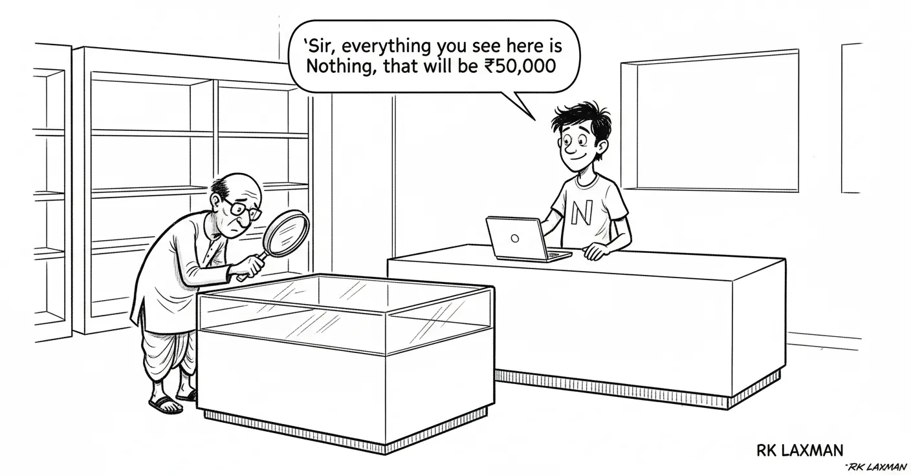
'Sir, everything you see here is Nothing, that will be ₹50,000'
Nothing opens its first retail store in India
Nothing, a tech company, opens its first retail store in India with factory-inspired design. The store will sell both No...
technologyretailstartups
2026-02-14
politics
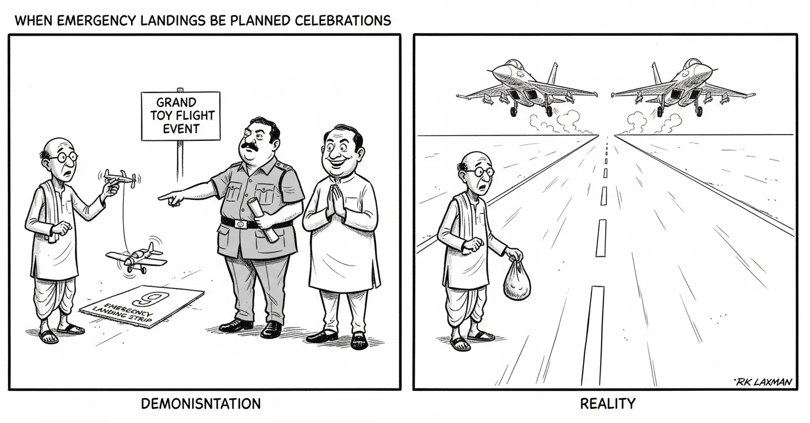
When emergency landings become planned celebrations
PM Modi witnesses special IAF aerial show at emergency landing facility in Assam
PM Modi inaugurates first Emergency Landing Facility (ELF) in Northeast India, witnesses aerial display of IAF aircraft ...
politicsinfrastructuredefense
2026-02-14
business
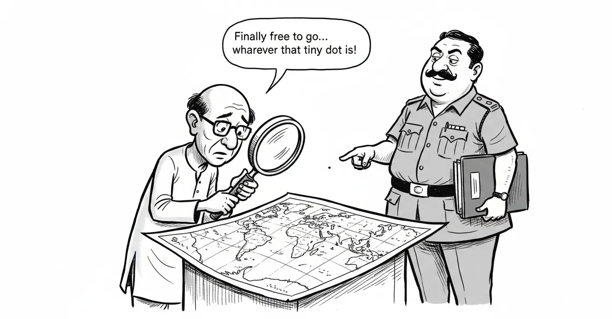
Finally free to go... wherever that tiny dot is!
Indians can now go to 56 countries without prior visa
India's passport ranking improves to 75th position, allowing visa-free or visa-on-arrival access to 56 countries, up fro...
businesstravelpassport
2026-02-14
sports
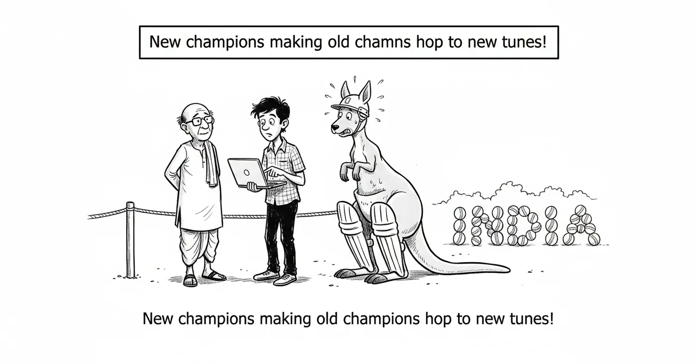
New champions making old champions hop to new tunes!
Confident India provide Molineux with tough start
India, the new ODI World Cup champions, face Australia in a multi-format cricket series with new Australian captain Soph...
sportscricketindia
2026-02-08
technology
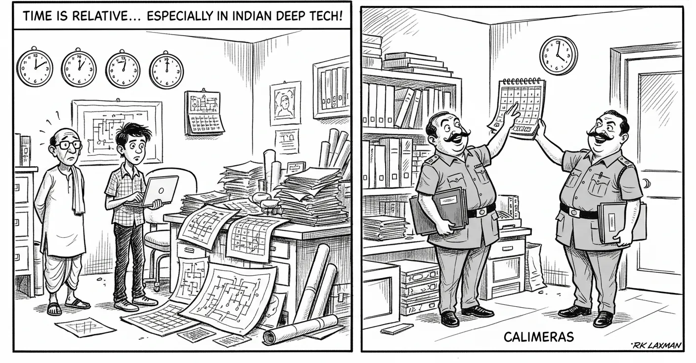
Time is relative... especially in Indian deep tech!
India has changed its startup rules for deep tech
India extends startup status period to 20 years for deep tech companies and increases revenue threshold to help them suc...
technologystartupsbureaucracy
2026-02-08
politics
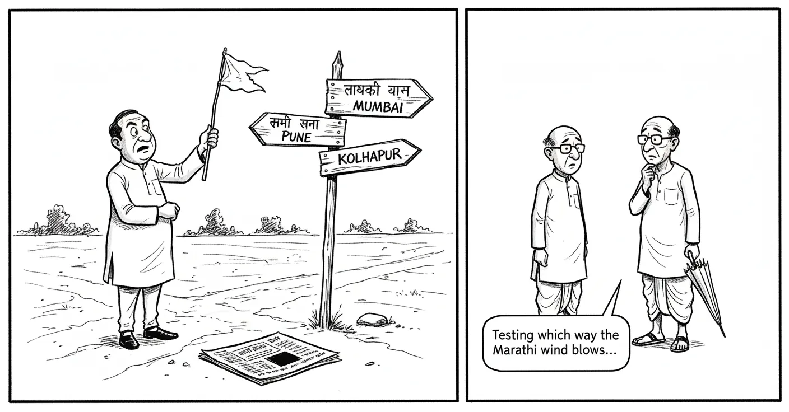
Testing which way the Marathi wind blows...
BJP picked Ritu Tawde as Mumbai Mayor due to Marathi backing for Sena (UBT) and ...
BJP names Marathi candidate Ritu Tawde as Mumbai Mayor, with opposition claiming this choice was forced due to strong Ma...
politicslocal_governanceMumbai
2026-02-08
business
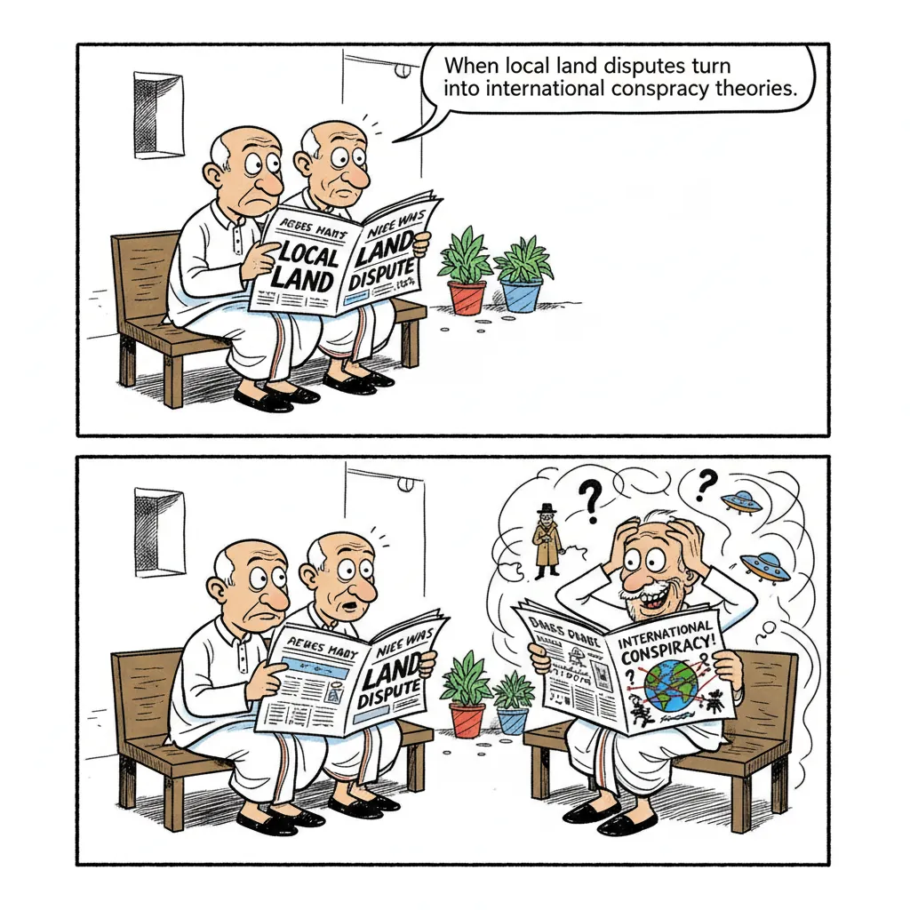
When local land disputes turn into international conspiracy theories
Gaurav Gogoi rubbishes Pak link charge
Assam CM accuses Congress leader of Pakistan connections, which the latter dismisses as baseless allegations. The politi...
businesspoliticssatire
2026-02-08
sports
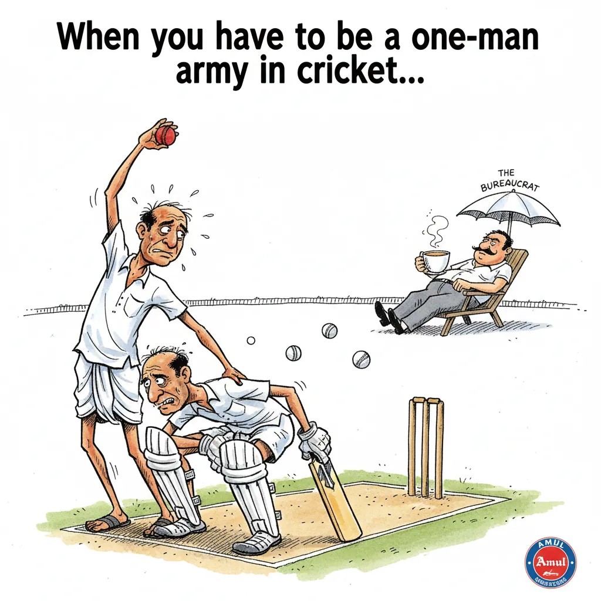
When you have to be a one-man army in cricket...
Herculean Bell and Doran's stunner seal thriller for Tasmania
In a tense cricket match, Tasmania beats Western Australia thanks to impressive bowling by Gabe Bell and spectacular wic...
sportscrickethumor
2026-02-06
technology
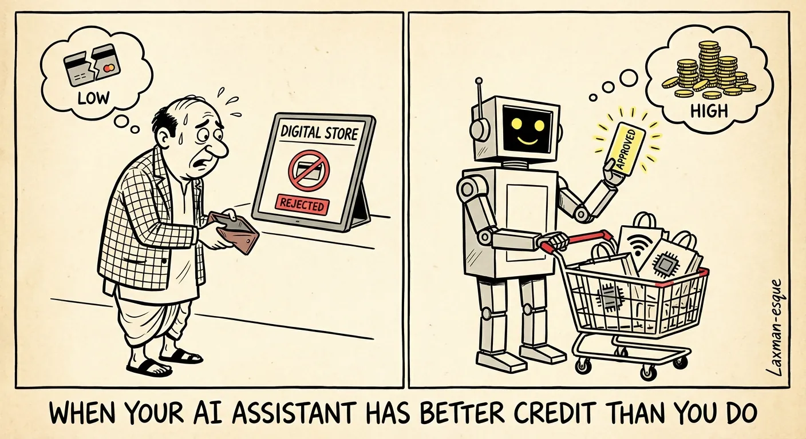
When your AI assistant has better credit than you do
Sapiom raises $15M to help AI agents buy their own tech tools
Startup Sapiom raises $15M to develop a system that lets AI agents autonomously purchase and access digital services and...
technologyartificial intelligencefinance
2026-02-06
politics
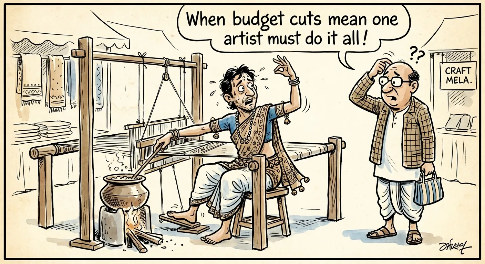
When budget cuts mean one artist must do it all!
Odisha food and crafts mela from February 6 to 8
Odisha's cultural festival showcasing traditional food, crafts and performances is being held in Hyderabad over three da...
culturefestivalsarts
2026-02-06
business
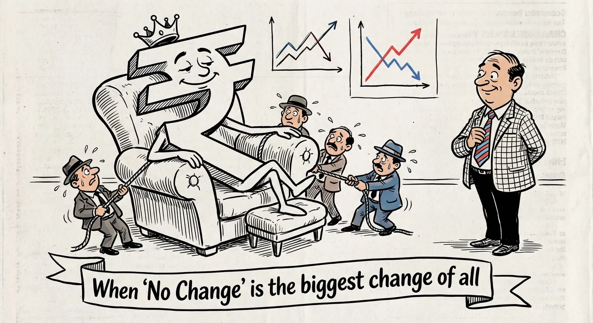
When 'No Change' is the biggest change of all
Why RBI left rates unchanged
RBI keeps interest rates unchanged at 5.25% due to strong economic growth and reduced trade pressures following US deal....
businesseconomybanking
2026-02-06
sports
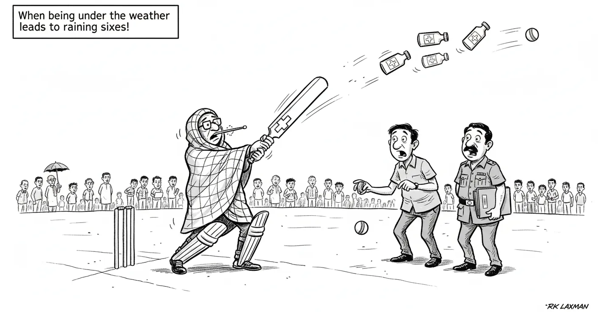
When being under the weather leads to raining sixes!
Smriti Mandhana overcomes 'massive flu' to play title-winning innings for RCB
Cricket team captain fights through severe flu to score 87 runs and lead her team to championship victory, while keeping...
sportscrickethumor
2026-02-05
technology
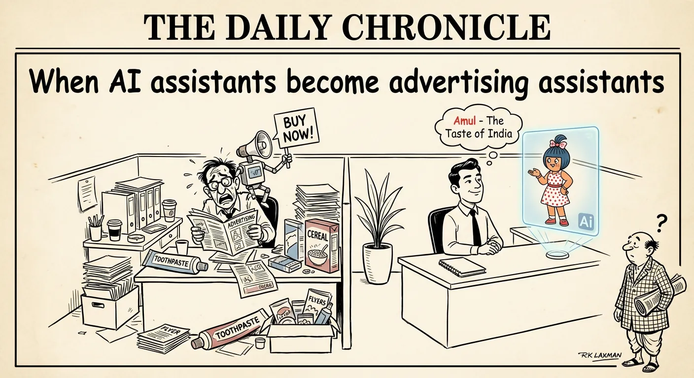
When AI assistants become advertising assistants
Sam Altman got exceptionally testy over Claude Super Bowl ads
AI company Anthropic aired Super Bowl ads mocking competitor OpenAI's plan to show ads in ChatGPT, leading to a heated r...
technologyartificial intelligenceadvertising
2026-02-05
politics
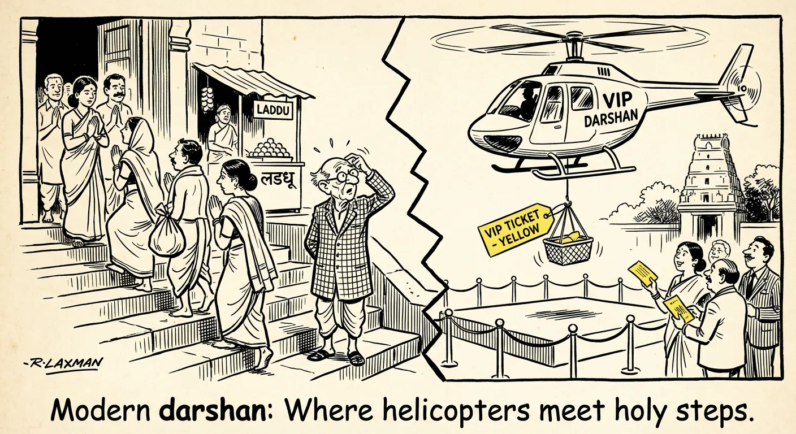
When free trade agreements aren't so free after all...
Concerned that FTA may cut access to medicines in India, rest of the developing ...
Medical aid group MSF warns that EU-India trade deal could restrict access to affordable generic medicines in developing...
politicshealthcareinternational trade
2026-02-05
business
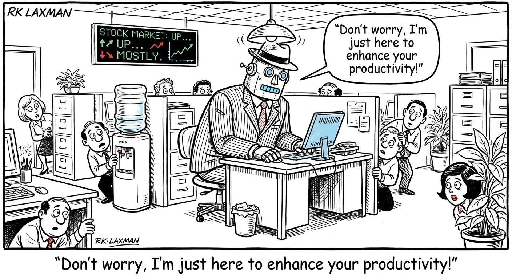
"Don't worry, I'm just here to enhance your productivity!"
How Anthropic move is just a trailer of AI-pocalypse
Anthropic's new AI automation tool causes panic in tech stocks as markets realize AI could replace IT services rather th...
businesstechnologyautomation
2026-02-05
sports
When bowling down the middle means playing both sides
Fergus O'Neill moves to Sydney Sixers amid talk over Victoria future
Cricket bowler switches teams from Melbourne to Sydney amid speculation about state loyalty. His career move highlights ...
sportscricketcareer
2026-02-04
technology
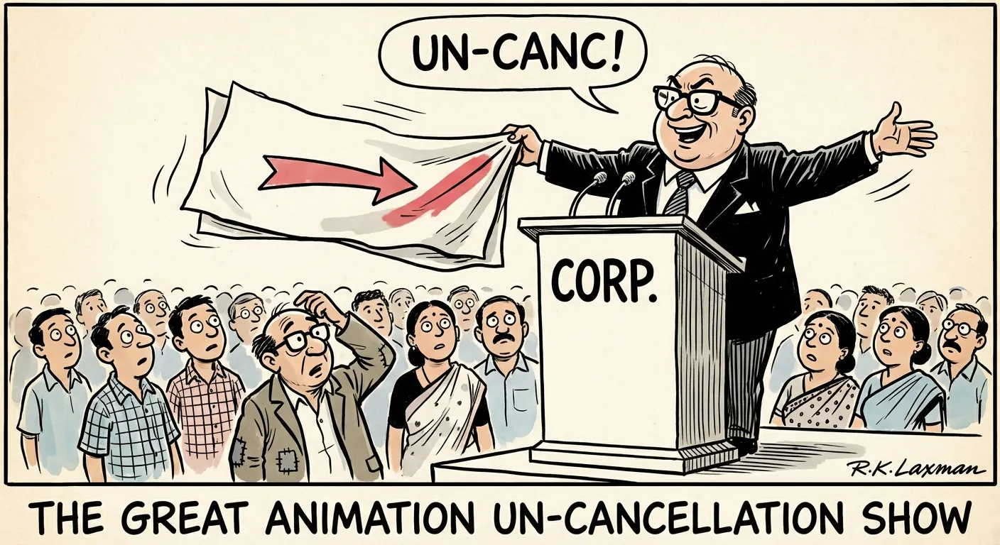
The Great Animation Un-cancellation Show
After backlash, Adobe cancels Adobe Animate shutdown and puts app on ‘maintenanc...
Adobe reverses decision to shut down Animate software after customer backlash, puts it in maintenance mode instead of di...
technologysoftwarecorporate
2026-02-04
politics
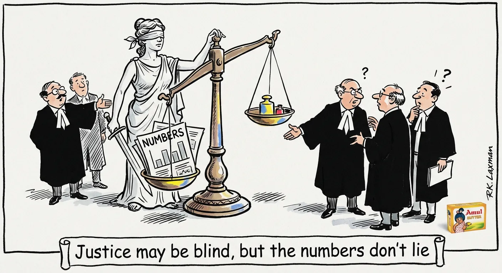
Justice may be blind, but the numbers don't lie
HC issues notices to Bar Council of India and A.P. on plea for 33% quota for wom...
Andhra Pradesh High Court considers petition for 33% quota for women lawyers in Bar Association elections. Court issues ...
politicsgender_equalitylegal_system
2026-02-04
business
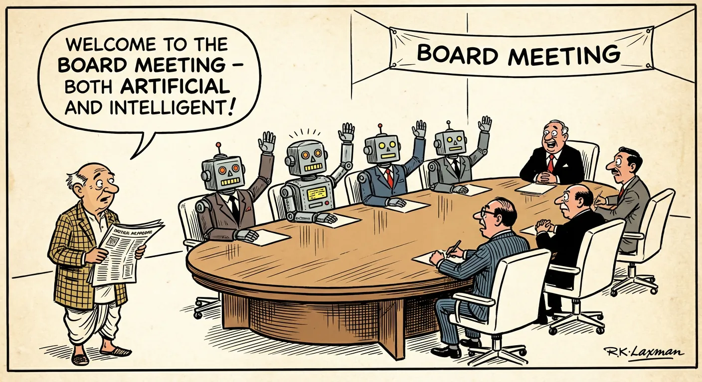
Welcome to the board meeting - both artificial and intelligent!
Building in AI this year? This is the room to be in
A tech article discusses how AI hackathons are becoming serious business venues where real products are developed, rathe...
businesstechnologyartificial intelligence
2026-02-04
sports
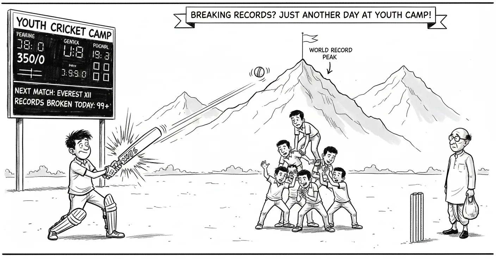
Breaking records? Just another day at youth camp!
India ace record chase to make Under-19 World Cup final
India's Under-19 cricket team chases down record target of 311 runs to reach World Cup final, overcoming early dropped c...
sportscricketyouth